We now return to the continuous-time optimal control problem that
we have been studying since Section 3.3, defined by the
control system (3.18) and the Bolza cost
functional (3.21). For concreteness, assume that we are
dealing with a fixed-time, free-endpoint problem, i.e., the target
set is
 . (Handling other target sets requires
some modifications, on which we briefly comment in what follows.) We
can then write the cost functional as
. (Handling other target sets requires
some modifications, on which we briefly comment in what follows.) We
can then write the cost functional as
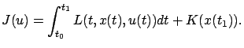
As we already remarked in Section 3.3.2, a more accurate notation for this functional would be
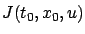
as it depends on the initial data.
The basic idea of dynamic programming is to consider, instead of
the problem of minimizing
for given  and
and
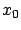
, the family of minimization problems associated with the cost functionals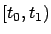
and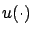
and satisfying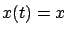
. (There is a slight abuse of notation here; the second argumentTo this end, let us introduce the value function
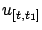
indicates that the control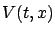
as the optimal cost (cost-to-go) fromIt is clear that the value function must satisfy the boundary condition
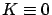
) then we have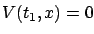
. The boundary condition (5.3) is of course a consequence of our specific problem formulation. If the problem involved a more general target set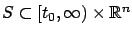
, then the boundary condition would read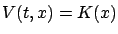
for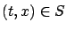
.The basic principle of dynamic programming for the present case is a continuous-time counterpart of the principle of optimality formulated in Section 5.1.1, already familiar to us from Chapter 4. Here we can state this property as follows, calling it again the principle of optimality: For every
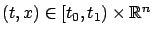
and every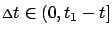
, the value function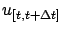
and satisfying . The intuition behind this statement is that to search for an optimal control, we can search over a small time interval for a control that minimizes the cost over this interval plus the subsequent optimal cost-to-go. Thus the minimization problem on the interval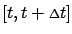
and the other on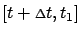
; see Figure 5.3.
The above principle of optimality may seem obvious. However, it is important to justify it rigorously, especially since we are using an infimum and not assuming existence of optimal controls. We give ``one half" of the proof by verifying that
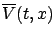
denotes the right-hand side of (5.4):
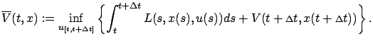
By (5.2) and the definition of infimum, for every
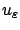
on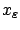
for the corresponding state trajectory, we have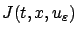 |
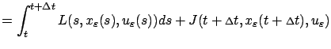 |
|
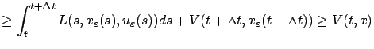 |
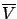
, respectively. Since (5.6) holds with an arbitrary
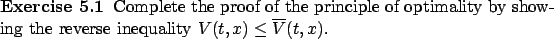